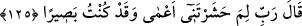
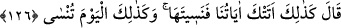

hidâyetime tâbi olma konusunda zikrime devamlı olarak sarılmaktan yüz çevirse
“şüphesiz onun sıkıntılı bir hayatı olacak.” Onun kalbi perdelenmenin (hicâbın) zilleti
ve kapının kapatılması sebebiyle azâb olunacak. Ve kendisine yücelere açılan kapılar
kapanır. Çünkü zikir, kalplerin anahtarıdır. Zikirden yüz çevirmek de kalbin kapısını
kapatmak demektir.”
Ey hoşbaht kimse, Hakk’ı zikretmek anahtardır
Hattâ can kapısını kilitsiz açamazsın
Melek gibi Hakk’ı zikri gıdâ eyle
Evliyânın geçimi devamlı bu olur
“Ve biz onu,” yâni Hakk’ı anmaktan yüz çeviren kimseyi “kıyamet günü kör olarak
haşredeceğiz.”
Bahru’l-ulûm’da şöyle der: “el-Haşr” yeniden dirilme ve toplama mânâlarına gelir.
Burada kasdedilen ilkidir.”
Kıyâmet günü onlar gözlerini kaybetmiş olarak haşredileceklerdir. Nitekim bir âyette
şöyle buyrulmaktadır: “Kıyamet günü onları, yüzü koyun, kör, dilsiz ve sağır bir
halde haşrederiz.” (el-İsrâ, 17/97)
Baklî’nin Arâis’nde şöyle der: “Yâni dünyada Hak’tan câhil olduğu/Hakk’ı bilmediği
gibi Hakk’ın varlığından câhil olarak diriltiriz. Nitekim Ali (r.a.) şöyle demiştir:
“Allâh’ı dünyada tanıyamayan, âhirette de tanıyamaz.”
125. O: “Rabbim! Beni niçin kör olarak haşrettin? Oysa ben, hakikaten görür
idim!” der.
“O: “Rabbim! Beni niçin kör olarak haşrettin? Oysa ben, hakikaten” dünyada
“görür idim!” der.”
126. (Allah) buyurur ki: “İşte böyle. Çünkü sana âyetlerimiz geldi; ama sen
onları unuttun. Bugün de aynı şekilde sen unutuluyorsun!”
“(Allah) buyurur ki: “İşte böyle.” Senin yaptığın gibi. “Çünkü sana âyetlerimiz
geldi;” yâni kitabımız Kur’ân’ın âyetleri ya da kudretin delilleri ve birliğin alâmetleri
hiç kimseye gizli kalmayacak şekilde açık ve parlak olarak geldi. “Ama sen onları
unuttun.” Onlara gözünü kapattın ve hiç hatırlanmamak üzere unutulan bir şey gibi terk